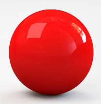

Ray tracing
Ce projet a éré réalisé lors du 1er semestre du BUT2. Le but de ce projet etait de réaliser une application qui permettait de faire du Ray tracing. Ce projet a été réalisé en équipe de 4.
Ce projet m'a permis de pouvoir m'améliorer en java et de voir ce que fait une équipe de developpement en terme d'organisation.
Image generé avec ray tracing
